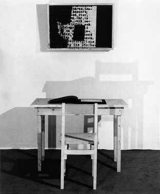

Galerie Anselm Dreher / Jochen
Gerz

Jochen Gerz
Objektkasten und Prototyp zum Dachau-Projekt 1974
signed photo in box 61 x 84,5 x 14 cm with text on transparentfilm,
signed by the artist.
Book "EXIT/Materialien zum Dachau-Projekt" 1972
with table and chair (design Anselm Dreher)
for istallation Dachau-Projekt, ADA Berlin 1974